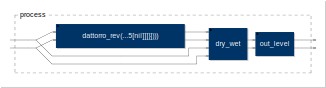

Documentation
Documentationreverb
fdnRev

declare name "fdnRev";
declare version "0.0";
declare author "JOS, Revised by RM";
declare description "A feedback delay network reverb.";
import("stdfaust.lib");
process = dm.fdnrev0_demo(16,5,3);
freeverb
declare name "freeverb";
declare version "0.0";
declare author "RM";
declare description "Freeverb demo application.";
import("stdfaust.lib");
process = dm.freeverb_demo;
reverbDesigner
declare name "reverbDesigner";
import("stdfaust.lib");
N = 16; // Feedback Delay Network (FDN) order (power of 2, 2 to 16)
NB = 5; // Number of T60-controlled frequency-bands (3 or more)
BSO = 3; // Order of each lowpass/highpass bandsplit (odd positive integer)
process = dm.fdnrev0_demo(N,NB,BSO);
reverbTester
declare name "reverbTester";
declare version "0.0";
declare author "RM";
declare description "Handy test inputs for reverberator demos below.";
import("stdfaust.lib");
process = dm.stereo_reverb_tester;
zitaRev
declare name "zitaRev";
declare version "0.0";
declare author "JOS, Revised by RM";
declare description "Example GUI for zita_rev1_stereo (mostly following the Linux zita-rev1 GUI).";
import("stdfaust.lib");
process = dm.zita_rev1;